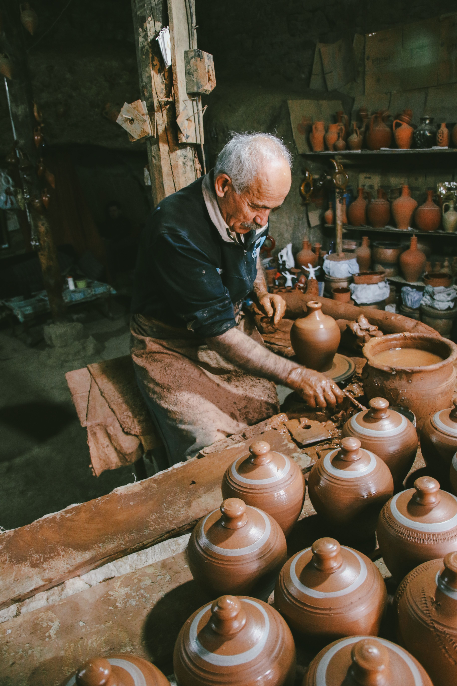

Association marocaine · Patrimoine vivant
L'artisanat marocain mérite d'être vu
Derrière chaque création, des mains et une histoire. Taawon met en lumière les coopératives qui font vivre les savoir-faire du Maroc.
Préserver les gestes.
Relier les personnes.

Dans les ateliers de Tamegroute
Le geste en héritage720
artisanes et artisans
12
régions représentées
6
filières artisanales
48
coopératives accompagnées
La richesse de nos gestes
Six univers,
un patrimoine infini.
Des visages, des territoires
Rencontrez celles et ceux qui créent.

Poterie
Terres de Tamegroute
Tamegroute · Drâa-Tafilalet
L'argile du Drâa, façonnée à la main et sublimée par un émail vert unique.
Voir la fiche
Tissage
Tissages de l'Atlas
Taznakht · Drâa-Tafilalet
Des tapis de laine où chaque motif raconte une mémoire de l'Atlas.
Voir la fiche
Argan
Les Femmes de l'Argan
Essaouira · Marrakech-Safi
Un savoir-faire féminin autour de l'arganier, transmis de mère en fille.
Voir la ficheLa force du collectif
Leurs voix font vivre Taawon.
____
« Notre travail voyage désormais bien au-delà de l'atelier, sans perdre son âme. »
Amina El Mansouri
Présidente · Tissages
de l'Atlas
____
« Taawon nous aide à raconter ce que chaque pièce porte en elle : notre histoire. »
Youssef Benali
Artisan · Terres
de Tamegroute
____
« Ensemble, nous ouvrons de nouvelles perspectives aux femmes de notre village. »
Fatima Aït Lahaj
Présidente · Les Femmes de
l'Argan
Gardons le lien
Un peu de Maroc dans votre boîte mail.
Des rencontres, des savoir-faire et les nouvelles du réseau. Une lettre par mois, tout simplement.